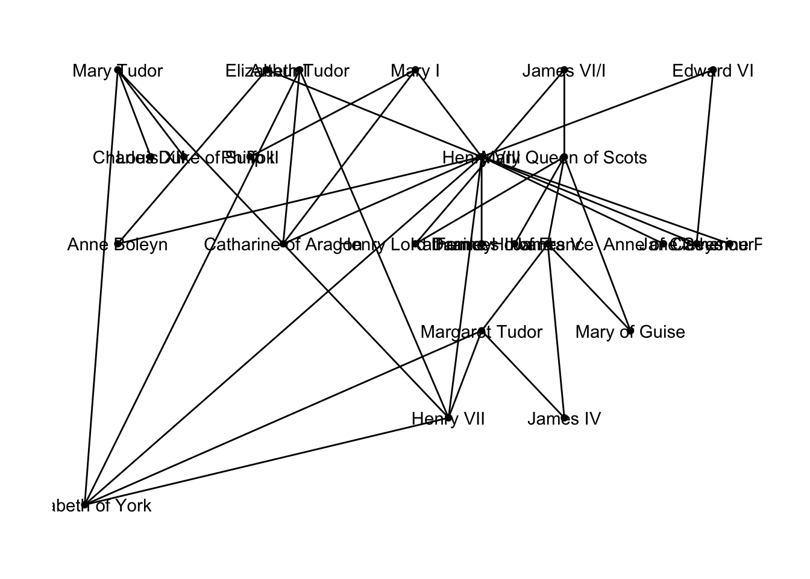
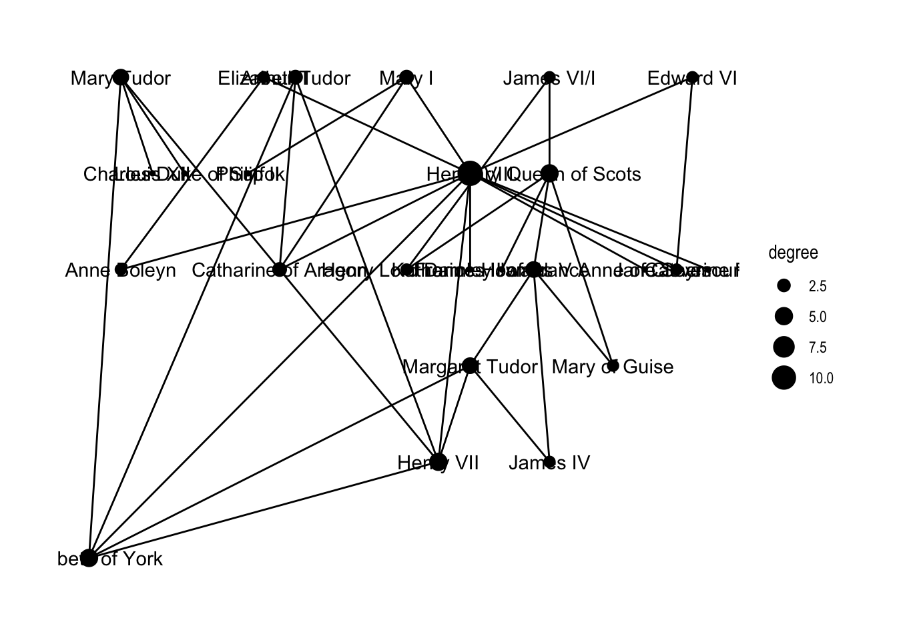
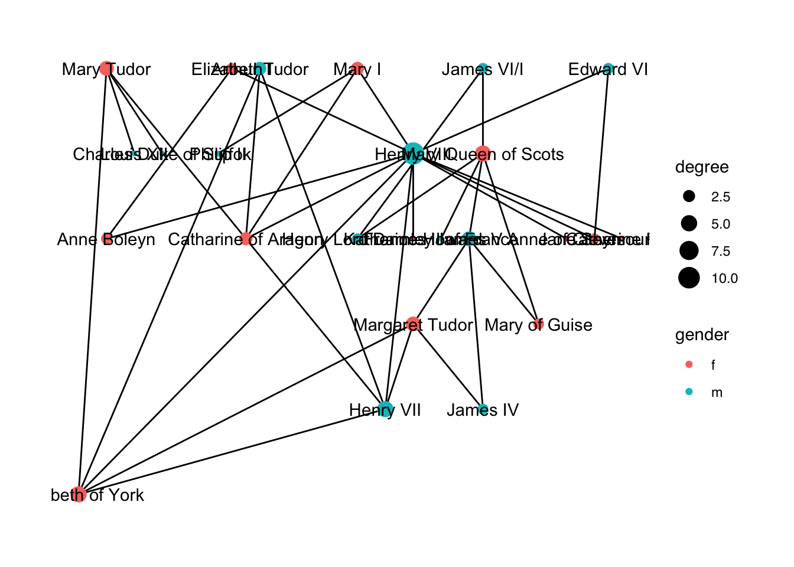
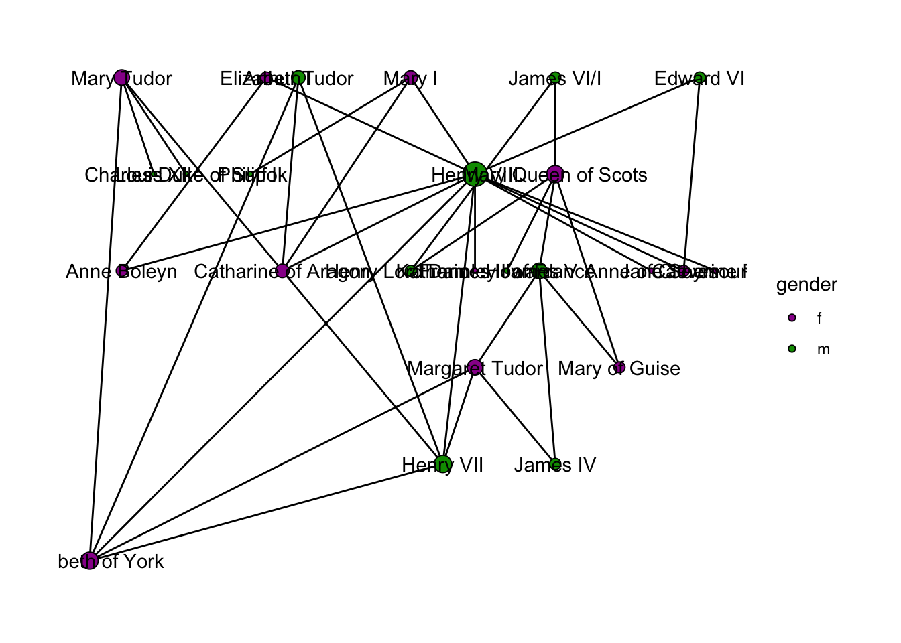
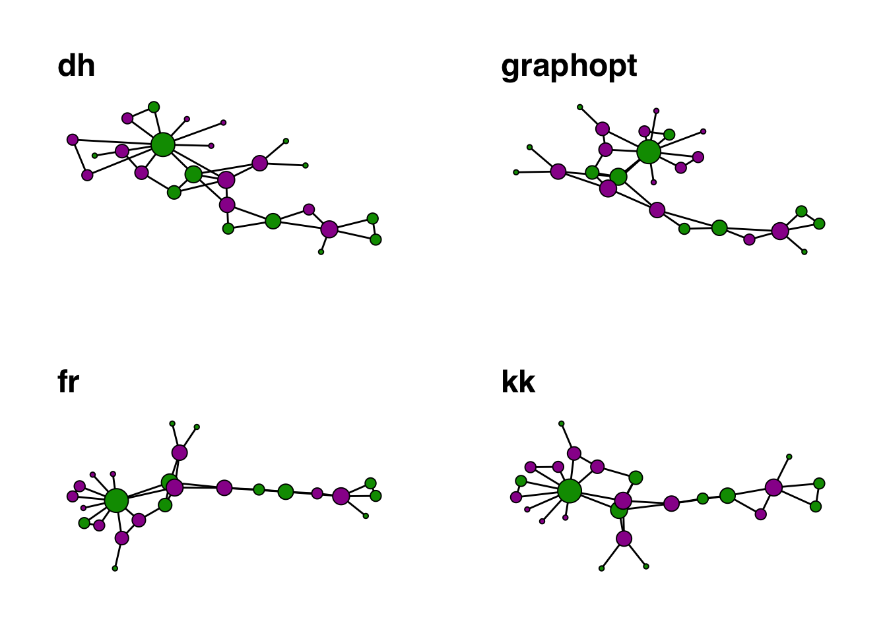
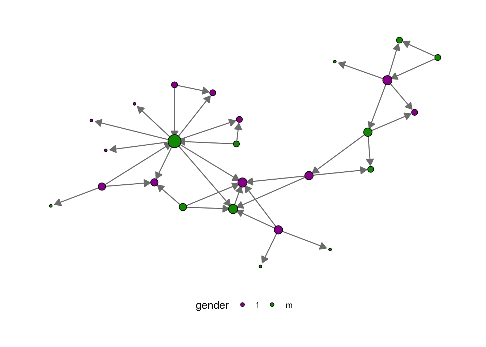
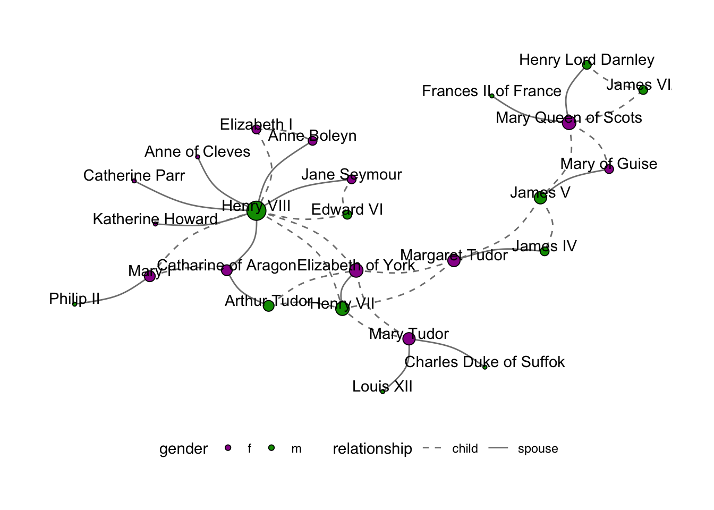
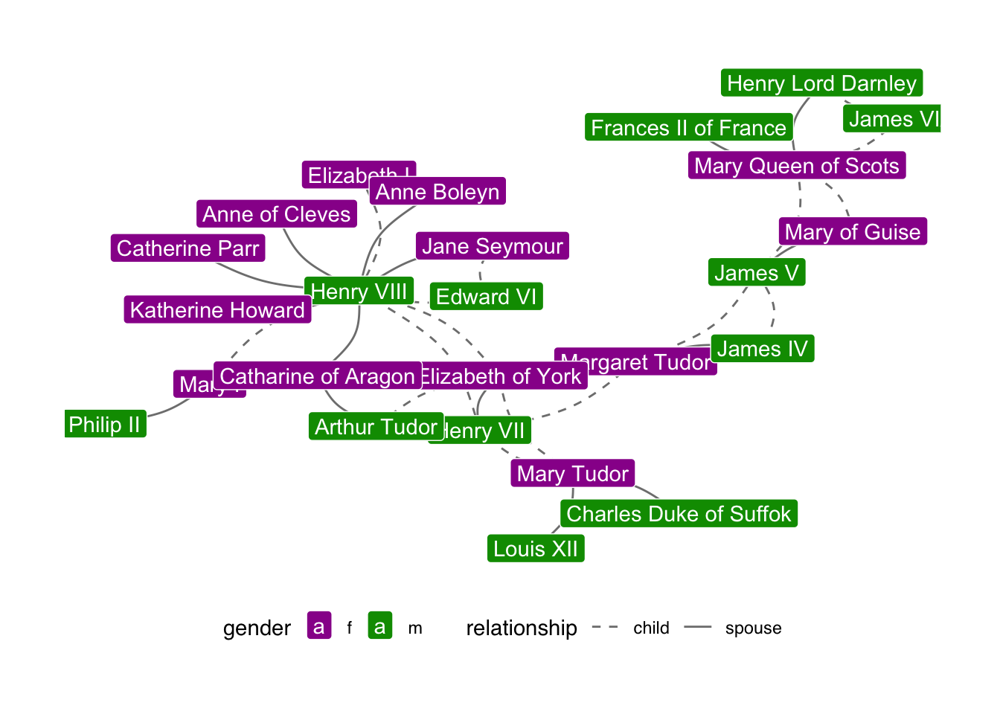

# install.packages('historydata', repos = c('https://ropensci.r-universe.dev'))
library(historydata)
library(tidyverse)
library(ggraph)
library(igraph)
library(ggimage)
#install.packages("visNetwork")
library(visNetwork)
# install.packages("networkD3")
library(networkD3)
library(udpipe)19 Графический дизайн сетей с ggraph и visNetwork
В этом уроке мы научимся работать с пакетом ggraph, который позволяет контролировать внешний вид всех элементов графа: узлов, ребер, фона, подписей, а также позволяет управлять раскладкой сети в целом. Мы также попробуем наложить одну из сетей на карту, чтобы отразить характер пространственных связей.
В качестве основы мы возьмем небольшой датасет “Тюдоры” из пакета historydata.
tudors <- tudors
tudorsПреобразуем таблицу в объект igraph.
tudors_g <- graph_from_data_frame(tudors)
tudors_gIGRAPH 7cf3658 DN-- 25 35 --
+ attr: name (v/c), relationship (e/c)
+ edges from 7cf3658 (vertex names):
[1] Henry VII ->Elizabeth of York
[2] Arthur Tudor ->Catharine of Aragon
[3] Henry VIII ->Catharine of Aragon
[4] Henry VIII ->Anne Boleyn
[5] Henry VIII ->Jane Seymour
[6] Henry VIII ->Anne of Cleves
[7] Henry VIII ->Katherine Howard
[8] Henry VIII ->Catherine Parr
+ ... omitted several edges19.1 Дизайн узлов
Для визуализации используем библиотеку ggraph. Минимум необходимых усилий уже даст нам что-то осмысленное, но это только начало.
ggraph(tudors_g, layout = "auto") +
geom_edge_link() +
geom_node_point() +
geom_node_text(aes(label = name)) +
theme_graph() Using "sugiyama" as default layout
При работе с узлами мы можем закодировать несколько переменных при помощи размера, цвета или, например, формы. Здесь мы ограничимся двумя способами: при помощи размера отразим степень узла (количество связей с другими участниками), а при помощи цвета – гендер.
Для этого сначала считаем степень узлов; как это делать, мы обсуждали в предыдущем уроке.
d <- as.numeric(degree(tudors_g))
V(tudors_g)$degree <- d
tudors_gIGRAPH 7cf3658 DN-- 25 35 --
+ attr: name (v/c), degree (v/n), relationship (e/c)
+ edges from 7cf3658 (vertex names):
[1] Henry VII ->Elizabeth of York
[2] Arthur Tudor ->Catharine of Aragon
[3] Henry VIII ->Catharine of Aragon
[4] Henry VIII ->Anne Boleyn
[5] Henry VIII ->Jane Seymour
[6] Henry VIII ->Anne of Cleves
[7] Henry VIII ->Katherine Howard
[8] Henry VIII ->Catherine Parr
+ ... omitted several edgesТеперь в код выше вносим несколько изменений.
ggraph(tudors_g, layout = "auto") +
geom_edge_link() +
geom_node_point(aes(size = degree)) +
geom_node_text(aes(label = name)) +
theme_graph() Using "sugiyama" as default layout
19.2 Добавление атрибутов узлов
Данных о гендере в датасете нет, но их несложно добавить.
gender_tbl <- tibble(name = V(tudors_g)$name) |>
mutate(gender = case_when(
str_detect(name, "(Margaret|Mary|Elizabeth|[CK]ath[ae]rine|Anne|Jane)") ~ "f",
.default = "m"))
gender_tblV(tudors_g)$gender <- gender_tbl$gender
vertex_attr(tudors_g)$name
[1] "Henry VII" "Arthur Tudor" "Henry VIII"
[4] "Margaret Tudor" "Mary Tudor" "James V"
[7] "Mary Queen of Scots" "Mary I" "James VI/I"
[10] "Elizabeth I" "Edward VI" "Elizabeth of York"
[13] "Catharine of Aragon" "Anne Boleyn" "Jane Seymour"
[16] "Anne of Cleves" "Katherine Howard" "Catherine Parr"
[19] "James IV" "Louis XII" "Charles Duke of Suffok"
[22] "Mary of Guise" "Frances II of France" "Henry Lord Darnley"
[25] "Philip II"
$degree
[1] 5 3 11 4 4 4 5 3 2 2 2 5 3 2 2 1 1 1 2 1 1 2 1 2 1
$gender
[1] "m" "m" "m" "f" "f" "m" "f" "f" "m" "f" "m" "f" "f" "f" "f" "f" "f" "f" "m"
[20] "m" "m" "f" "m" "m" "m"Гендер можно закодировать цветом.
ggraph(tudors_g, layout = "auto") +
geom_edge_link() +
geom_node_point(aes(size = degree, color = gender)) +
geom_node_text(aes(label = name)) +
theme_graph(base_family = "sans") Using "sugiyama" as default layout
Поменяем цветовую шкалу уже известным способом.
cols <- c(m = "#990099FF", f = "#009900FF")
ggraph(tudors_g, layout = "auto") +
geom_edge_link() +
geom_node_point(aes(size = degree,
fill = gender),
shape = 21, # это кружки с заливкой
color = "black"
) +
geom_node_text(aes(label = name)) +
# убираем лишнюю легенду
scale_size(guide = 'none') +
scale_fill_manual(values = cols) +
theme_graph(base_family = "sans") Using "sugiyama" as default layout
Теперь подумаем над укладкой.
19.3 Укладка сети
Графическое представление одной и той же сети будет зависеть от выбранного способа укладки.
При построении графиков сетей стремятся следовать следующим принципам:
- минимизировать пересечения ребер;
- максимизировать симметричность укладки узлов;
- минимизировать изменчивость длины ребер;
- максимизировать угол между ребрами, когда они пересекают или соединяют узлы;
- минимизировать общее пространство для вывода сети.
Для автоматического построения укладок разработано большое количество методов. В пакете igraph для каждого есть особая функция; вот некоторые из них:
layout_randomly()
layout_in_circle()
layout_on_sphere()layout_with_drl()(Distributed Recursive Layout)layout_with_fr()(Fruchterman-Reingold)layout_with_dh()(Davidson-Harel)layout_with_kk()(Kamada-Kawai)layout_with_lgl()(Large Graph Layout)layout_as_tree()(Reingold-Tilford)layout_nicely()
Пакет ggraph позволяет выбрать укладку, не вызывая отдельно функцию:
library(gridExtra)
layouts <- c("dh", "graphopt", "fr", "kk")
plot_graph <- function(layout) {
g <- ggraph(tudors_g, layout = layout) +
geom_edge_link() +
geom_node_point(aes(size = degree,
fill = gender),
show.legend = FALSE,
shape = 21,
color = "black"
) +
#geom_node_text(aes(label = name)) +
scale_fill_manual(values = cols) +
scale_size(guide = 'none') +
theme_graph(base_family = "sans") +
labs(title = layout)
return(g)
}
g_list <- map(layouts, plot_graph)
grid.arrange(grobs = g_list, nrow = 2)
Подробнее см. здесь.
19.4 Дизайн ребер
Наш граф носит направленный характер, а значит мы можем отразить и направленность, и характер связей. Кодируем атрибут relationship, например, типом линии.
set.seed(21092024)
# добавляем итерации для укладки
ggraph(tudors_g, layout = "dh", maxiter = 100) +
# вот тут вносим изменения
geom_edge_link(aes(edge_linetype = relationship),
# меняем цвет линии
color = "grey50",
# меняем тип линии
edge_width = 1.2) +
geom_node_point(aes(size = degree,
fill = gender),
shape = 21,
color = "black"
) +
#geom_node_text(aes(label = name)) +
#scale_fill_manual(values = cols) +
scale_size(guide = 'none') +
theme_graph(base_family = "sans") +
# перемещаем легенду
theme(legend.position = "bottom")
Можно заменить линии на стрелки.
set.seed(21092024)
ggraph(tudors_g, layout = "dh", maxiter = 100) +
geom_edge_link(color = "grey50",
# стрелка
arrow = arrow(angle = 30,
length = unit(0.25, "cm"),
ends = "last",
type = "closed"),
# небольшой отступ от кружка
end_cap = circle(1.5, "mm")
) +
geom_node_point(aes(size = degree,
fill = gender),
shape = 21,
color = "black"
) +
#geom_node_text(aes(label = name)) +
scale_fill_manual(values = cols) +
scale_size(guide = 'none') +
theme_graph(base_family = "sans") +
theme(legend.position = "bottom")
Или придать им изогнутости и раскрасить.
e_cols <- c(spouse = "#990099FF", child = "#009900FF")
set.seed(21092024)
ggraph(tudors_g, layout = "dh", maxiter = 100) +
# вот тут изменения
geom_edge_arc(aes(edge_colour = relationship),
# как сильно изгибать
strength = 0.2,
arrow = arrow(angle = 30,
length = unit(0.2, "cm"),
# от родителей к детям, а не наоборот
ends = "first",
type = "closed"),
# тут тоже меняем
start_cap = circle(1.5, "mm")
) +
geom_node_point(aes(size = degree,
fill = gender),
shape = 21,
color = "black"
) +
#geom_node_text(aes(label = name)) +
scale_fill_manual(values = cols) +
# цветовая шкала для ребер
scale_edge_color_manual(values = e_cols) +
scale_size(guide = 'none') +
theme_graph(base_family = "sans") +
theme(legend.position = "bottom")19.5 Подписи с geom_node_label()
Если мы просто вернем подписи, то они будут не очень читаемы, даже на нашем (очень небольшом) датасете.
set.seed(21092024)
ggraph(tudors_g, layout = "dh", maxiter = 100) +
# тип линии вместо цвета, убираем стрелку
geom_edge_arc(aes(linetype = relationship),
color = "grey50",
strength = 0.2
) +
geom_node_point(aes(size = degree,
fill = gender),
shape = 21,
color = "black"
) +
# чуть подвинем
geom_node_text(aes(label = name), nudge_y = 0.5) +
scale_fill_manual(values = cols) +
# тип линии для ребер
scale_edge_linetype_manual(values = c("dashed", "solid")) +
scale_size(guide = 'none') +
theme_graph(base_family = "sans") +
theme(legend.position = "bottom")
Одно из решений может выглядеть так.
set.seed(21092024)
ggraph(tudors_g, layout = "dh", maxiter = 100) +
geom_edge_arc(aes(linetype = relationship),
color = "grey50",
strength = 0.2
) +
# изменения тут
geom_node_label(aes(label = name,
fill = gender),
color = "white"
) +
scale_fill_manual(values = cols) +
scale_edge_linetype_manual(values = c("dashed", "solid")) +
theme_graph(base_family = "sans") +
theme(legend.position = "bottom")Warning in geom_node_label(aes(label = name, fill = gender), color = "white"):
Ignoring unknown parameters: `label.size`
19.6 Картинки с geom_image()
При желании можно заменить подписи на портреты или любую другую картинку.
queen <- c("./images/queen.png")
king <- c("./images/king.png")
gender_tbl <- gender_tbl |>
mutate(image = case_when(gender == "m" ~ king,
gender == "f" ~ queen))
set.seed(21092024)
ggraph(tudors_g, layout = "dh", maxiter = 100) +
geom_edge_arc(aes(linetype = relationship),
color = "grey50",
strength = 0.2
) +
# изменения тут
geom_image(aes(x = x,
y = y,
image = gender_tbl$image),
size = 0.1)+
scale_edge_linetype_manual(values = c("dashed", "solid")) +
theme_graph(base_family = "sans") +
theme(legend.position = "bottom")Если бы в наших данных были сведения о годе рождения, то мы могли бы их тоже учесть на графе, но пока оставим как есть.
19.7 Интерактивный граф
Чтобы добавить интерактивности, придется выйти за пределы ggraph. Пакет networkD3 требует на входе датафрейм.
simpleNetwork(tudors)Еще один вариант. Сначала трансформируем igraph в объект visNetwork. Цвета, если мы хотим на них повлиять, можно поменять вручную.
colors <- ifelse(V(tudors_g)$gender=="f", cols[1], cols[2])
V(tudors_g)$color <- colorsdata <- toVisNetworkData(tudors_g)tudors_3d <- visNetwork(nodes = data$nodes,
edges = data$edges,
color = data$nodes$color,
width = "100%",
height = 600)Настраиваем и сохраняем граф.
visOptions(tudors_3d,
highlightNearest = list(enabled = TRUE, degree = 1, hover = TRUE),
nodesIdSelection = FALSE) |>
visPhysics(maxVelocity = 20, stabilization = FALSE) |>
visInteraction(dragNodes = TRUE) |>
# удалите эту строку, если хотите видеть граф во вьюере
visSave(file = "tudors.html")Et voilà. Все наши Тюдоры как живые.
19.8 Возможности VisNetwork
Подробнее о возможностях visNetwork можно почитать здесь. Вот так можно добавить всплывающие подсказки и иконки для узлов.
# Создаем узлы с tooltips
nodes <- data.frame(
id = 1:3,
label = c("King", "Queen", "Prince"),
# иконки
shape = "icon",
# tooltips для каждого узла
title = c("The ruler of the kingdom",
"The queen of the land",
"The prince in the castle"),
icon = list(
face = "FontAwesome",
# коды иконок FA
code = c("f118", "f005", "f183"),
size = 50,
color = c("darkred", "purple", "blue") # Цвета иконок
)
)
# связи между узлами
edges <- data.frame(from = c(1, 1), to = c(2, 3))
# граф с иконками и tooltips
visNetwork(nodes, edges) |>
visOptions(highlightNearest = list(enabled = TRUE, degree = 1, hover = TRUE)) |>
addFontAwesome()19.9 Видео
- Видео 2025 г.
- Видео 2026 г.
19.10 Домашнее задание
Прочитайте в окружение размеченный текст “Записок Цезаря”, с которым мы работали в одном из предыдущих уроков. NB: Можно разметить другой текст (или взять готовый conllu), если не хотите работать с латынью 😭.
caesar <- udpipe_read_conllu("https://github.com/locusclassicus/text_analysis_2024/raw/main/files/bg_latinpipe.conllu")Функция cooccurence() из пакета udpipe позволяет выяснить, сколько раз некий термин встречается совместно с другим термином, например:
- слова встречаются в одном и том же документе/предложении/параграфе;
- слова следуют за другим словом;
- слова находятся по соседству с другим словом на расстоянии n слов.
Код ниже позволяет выяснить, какие существительные встречаются в одном предложении:
caesar_subset <- caesar |>
filter(upos == "NOUN")cooc <- cooccurrence(caesar_subset, term = "lemma",
group = c("doc_id", "sentence_id")) |>
as_tibble() |>
filter(cooc > 25) # поменяйте значение
coocЧтобы узнать, какие слова чаще стоят рядом, используем ту же функцию, но с другими аргументами:
cooc2 <- cooccurrence(caesar_subset$lemma,
relevant = caesar_subset$upos %in% c("NOUN", "ADJ"),
skipgram = 1) |>
as_tibble() |>
filter(cooc > 10)
cooc2Любой из этих результатов следует визализировать в виде графа, используя пакеты {igraph}, {ggraph} или (опционально) {visNetwork}.
Используйте рассмотренные сегодня способы дизайна узлов и ребер, выберите укладку сети, при необходимости используйте текстовые подписи, изображения или легенды. Строгих критериев нет, но целое должно быть информативно и — в меру ваших представлений о прекрасном — приятно на вид.
Результат вместе с кодом опубликовать и оставить ссылку здесь.
Дедлайн 23-59, 8 марта. Оценка 0/1.